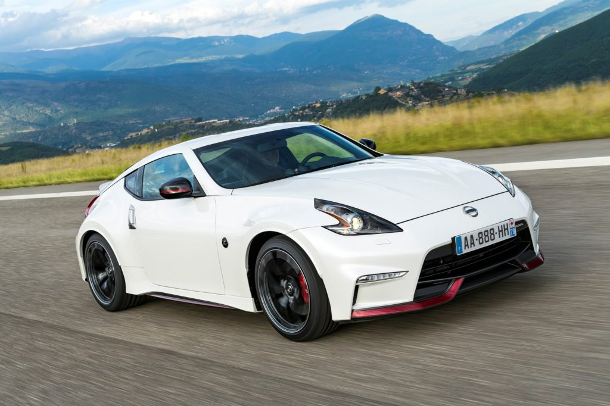

Nissan 370Z Nismo
O Nissan 370Z Nismo é a união perfeita entre engenharia de alta performance e design esportivo. Criado para oferecer uma experiência emocionante ao volante, ele mantém viva a tradição dos esportivos da Nissan. O mundo ficou sabendo mundialmente dele depois de aparecer no filme Velocidade e Fúria, sendo dirigido pelo falecido ator Paul Walker, conhecido no filme como Brian O'Conner.
- 
Características do Nissan 370Z Nismo:
- Performance Refinada
- Motor V6 de 3.7 litros, 350 cavalos de potência
- Acelera de 0 a 100 km/h em apenas 5 segundos
- Sistema de suspensão ajustado para pista
- Estilo e Aerodinâmica
- Design inspirado em carros de corrida
- Para-choques reestilizados e spoiler traseiro
- Rodas de liga leve para um visual esportivo
- Interior Exclusivo
- Detalhes em couro Alcântara
- Volante esportivo e pedais de alumínio
- Comodidade e exclusividade para o motorista
Descubra mais no vídeo abaixo: